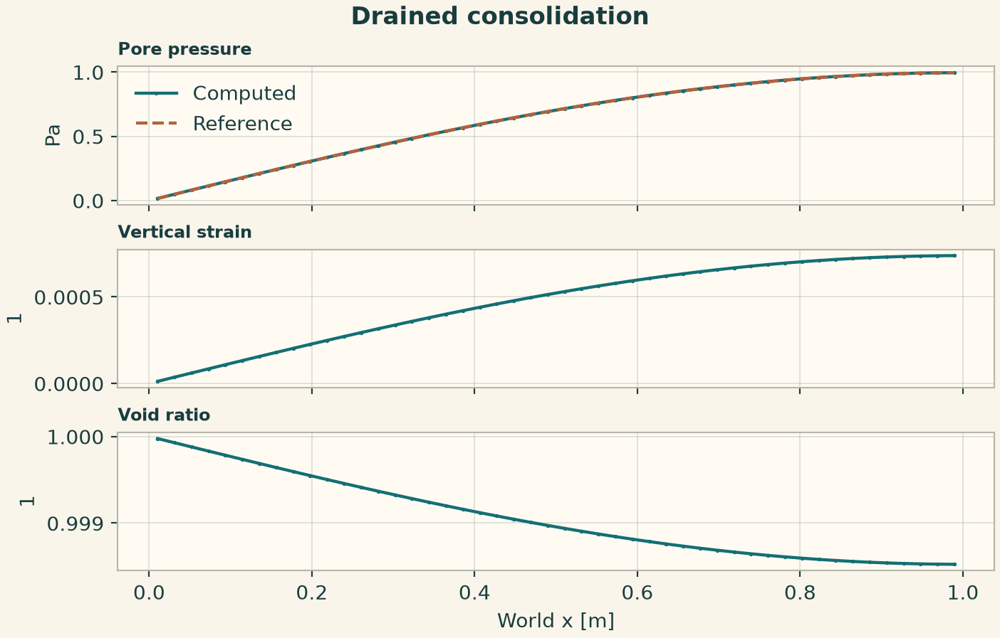
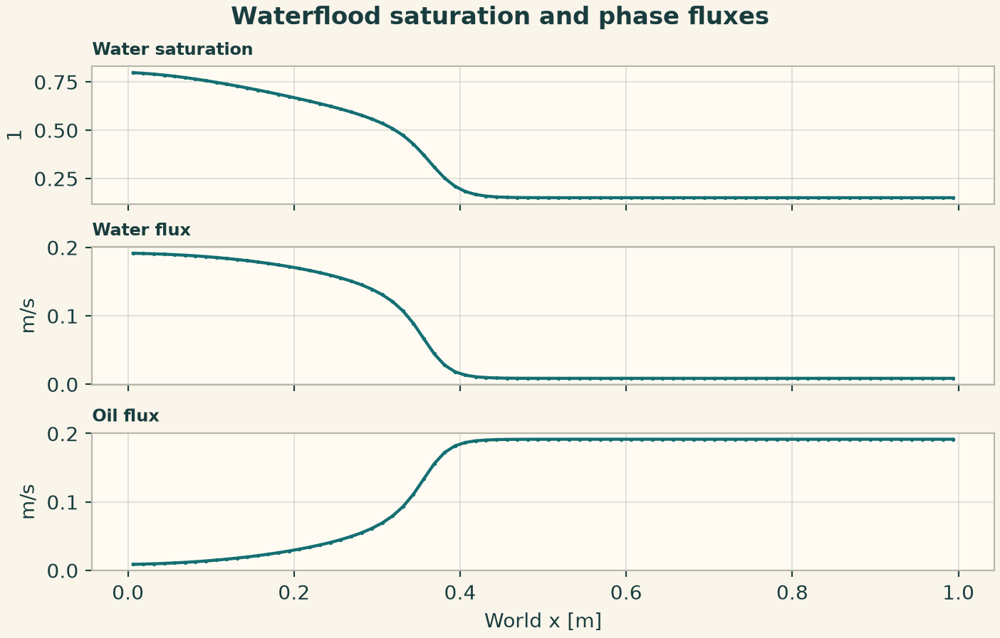
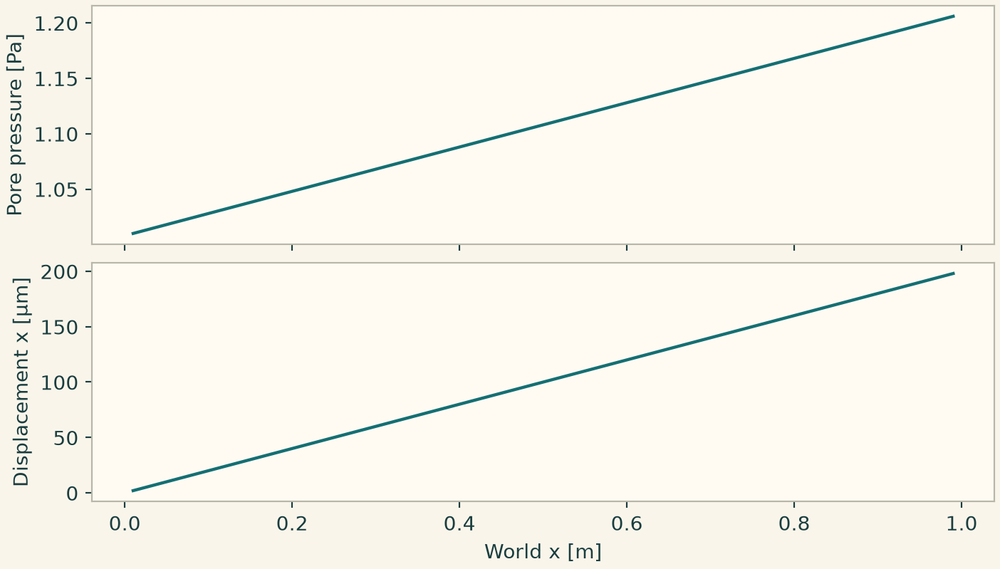
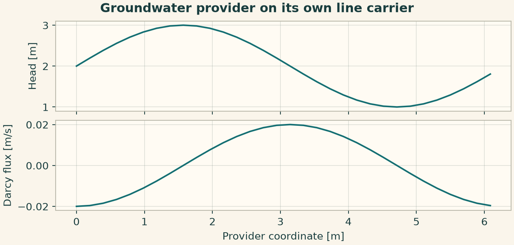
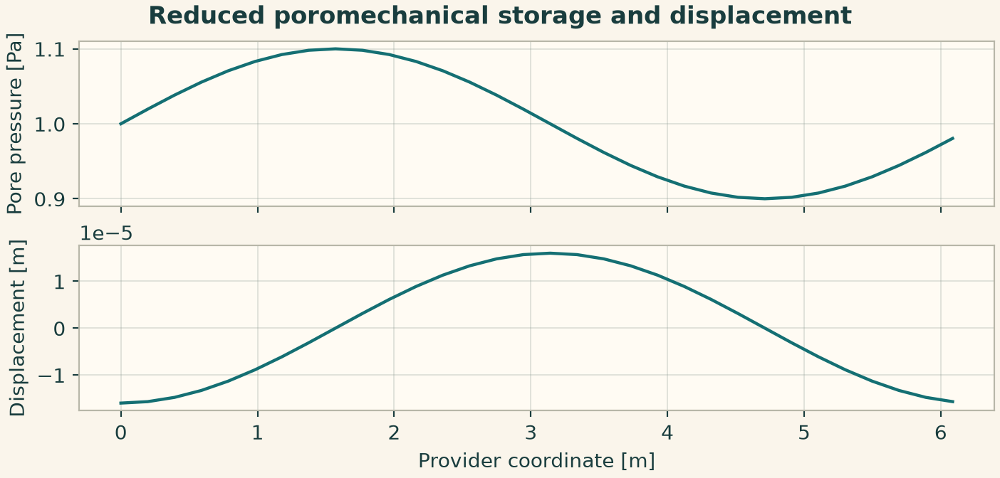
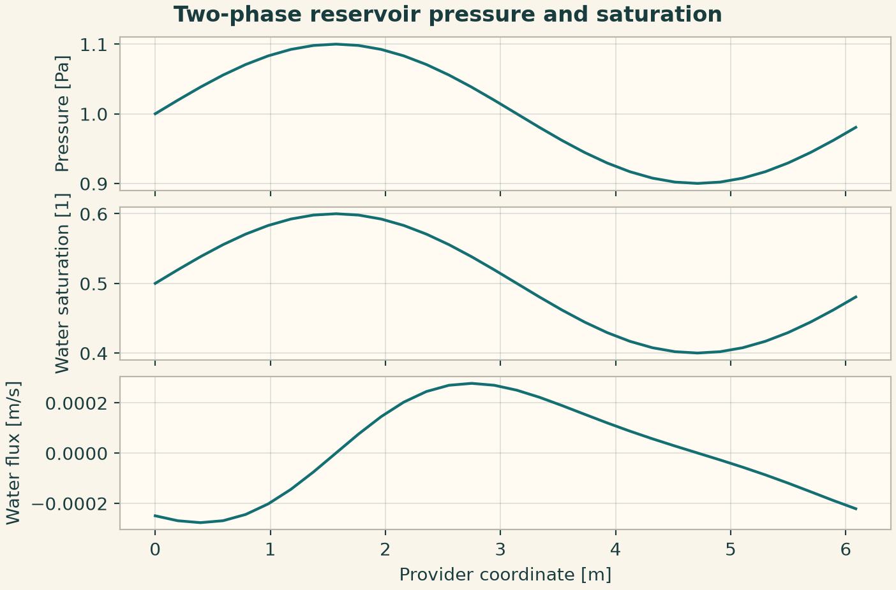
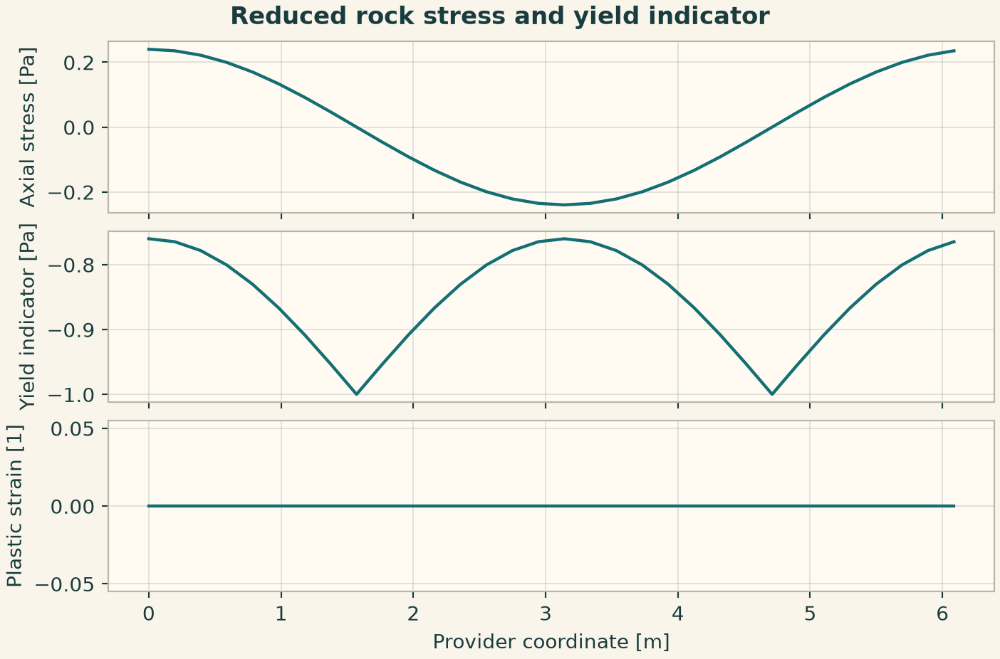
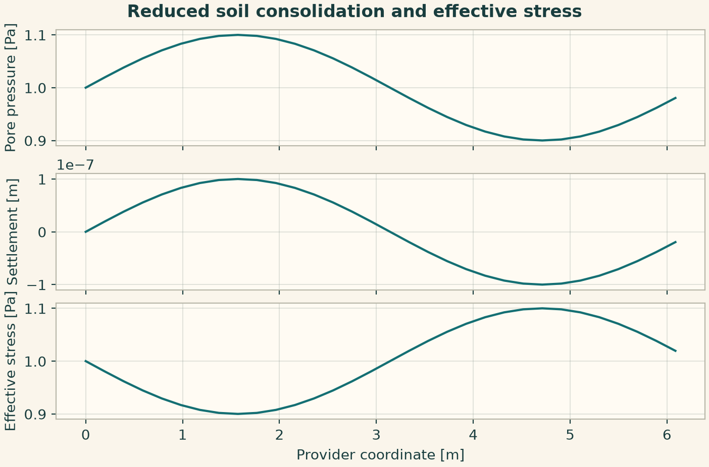

Docs › Worked physics and service recipes › Geotechnics recipes
6.9 Geotechnics recipes
This section includes the field-based declarations and the independently callable geotechnics service configurations. The configuration keys in the service recipes belong to the indicated provider.
6.9.1 One-dimensional drainage and consolidation
Drain one end and make the opposite end impermeable. The half-sine pressure mode satisfies both conditions. Keep pore pressure, strain and void ratio as separate initial fields.
from onesim.physics.geotechnics import (
DrainedBoundary,
ImpermeableBoundary,
TerzaghiConsolidation,
)
line = Line(start=(0, 0, 0), end=(1, 0, 0))
model = TerzaghiConsolidation(
domain=line.line,
permeability=0.01,
fluid_viscosity=1,
constrained_storage=1,
constrained_compressibility=0.15,
total_stress=2,
)
conditions = (
DrainedBoundary(physics=model, boundary=line.boundaries.start),
ImpermeableBoundary(physics=model, boundary=line.boundaries.end),
)
wave = lambda x: np.sin(np.pi * x / 2)
end = 0.2
result = line_experiment(
line,
model,
dict(pore_pressure=wave, vertical_strain=0.0, void_ratio=1.0),
FiniteDifference(gradient=CentralDifference(), diffusion=CentralLaplacian()),
cells=48,
end=end,
dt=0.001,
conditions=conditions,
)
exact = lambda x: wave(x) * np.exp(-0.01 * (np.pi / 2) ** 2 * end)
p = result.field(model.pore_pressure)
np.testing.assert_allclose(p.values, exact(p.space.dof_coordinates[:, 0]), atol=4e-4)
fig = profile_figure(
"Drained consolidation",
result,
model,
("pore_pressure", "vertical_strain", "void_ratio"),
reference={"pore_pressure": exact},
)
plt.show()

6.9.2 Waterflood with quadratic Corey fractional flow
Feed water into a domain with low initial saturation. Water and oil fluxes partition the prescribed Darcy velocity. The saturation history advances with porosity in the storage term.
from onesim.physics.geotechnics import (
BuckleyLeverettFlow,
QuadraticCoreyFractionalFlow,
SaturationInlet,
SaturationOutflow,
)
line = Line(start=(0, 0, 0), end=(1, 0, 0))
model = BuckleyLeverettFlow(
domain=line.line,
porosity=0.25,
darcy_velocity=0.2,
fractional_flow=QuadraticCoreyFractionalFlow(viscosity_ratio=0.7),
)
conditions = (
SaturationInlet(physics=model, boundary=line.boundaries.start, value=0.8),
SaturationOutflow(physics=model, boundary=line.boundaries.end),
)
result = line_experiment(
line,
model,
dict(water_saturation=0.15),
FiniteVolume(convection=Rusanov()),
cells=80,
end=0.25,
dt=0.001,
conditions=conditions,
)
s = result.field(model.water_saturation).values
assert s.min() >= 0 and s.max() <= 1 and s[0] > s[-1]
np.testing.assert_allclose(
result.field(model.water_flux).values + result.field(model.oil_flux).values, 0.2
)
fig = profile_figure(
"Waterflood saturation and phase fluxes",
result,
model,
("water_saturation", "water_flux", "oil_flux"),
)
plt.show()

6.9.3 Manufactured three-dimensional Biot patch
The pressure trace is in pascals, while the initial state is fluid content. Apply a time-varying displacement and compare the recovered pore pressure and displacement to a manufactured field. The body force and supply make this a check of the full balance.
import numpy as np
import matplotlib.pyplot as plt
import onesimulation_plot_theme as theme
from onesim.cad.d3 import Box
from onesim.meshing import StructuredTetrahedralMesher
from onesim.numerics import Numerics
from onesim.numerics.fem import FiniteElement, Lagrange, Nitsche
from onesim.numerics.linear import SparseDirect
from onesim.numerics.nonlinear import Newton
from onesim.numerics.time import BackwardEuler
from onesim.physics.geotechnics import BiotConsolidation, PrescribedPorePressure
from onesim.physics.solid_mechanics import FixedDisplacement
from onesim.simulation import Problem, Simulation
from onesim.simulation.initial_conditions import InitialValue
box = Box(length=1, width=1, height=1)
model = BiotConsolidation(
domain=box.volume,
youngs_modulus=2.0,
poisson_ratio=0.25,
biot_coefficient=0.8,
specific_storage=0.7,
permeability=0.01,
fluid_viscosity=1.0,
fluid_supply=0.304,
body_force=(0.16, 0, 0),
)
def displacement(x, y, z, t):
return 0.01 * t * np.column_stack((x, y, z))
def pressure(time, coordinate):
return [1 + 0.2 * coordinate[0] + 0.4 * time]
conditions = (
FixedDisplacement(physics=model, boundary=box.boundaries.all, value=displacement),
PrescribedPorePressure(
physics=model, boundary=box.boundaries.all, value=pressure
),
)
mesh = StructuredTetrahedralMesher(cells=(2, 2, 2)).generate(box)
sim = Simulation(
problem=Problem(
name="Biot patch",
geometry=box,
physics=(model,),
boundary_conditions=conditions,
initial_conditions=(
InitialValue(model.fluid_content, lambda x: 0.7 * (1 + 0.2 * x)),
),
),
mesh=mesh,
numerics=Numerics(
spatial=FiniteElement(element=Lagrange(1), boundary_enforcement=Nitsche()),
linear_solver=SparseDirect(),
time_integrator=BackwardEuler(),
nonlinear_solver=Newton(
linear_solver=SparseDirect(),
jacobian="analytic",
absolute_tolerance=1e-12,
relative_tolerance=1e-11,
),
),
)
sim.validate().require_valid()
result = sim.run(start_time=0, end_time=0.02, time_step=0.01)
x = np.linspace(0.01, 0.99, 100)
points = np.column_stack((x, np.full_like(x, 0.35), np.full_like(x, 0.55)))
p = result.field(model.pore_pressure).evaluate(points)
u = result.field(model.displacement).evaluate(points)[:, 0]
np.testing.assert_allclose(p, 1 + 0.2 * x + 0.008, atol=2e-10)
np.testing.assert_allclose(u, 0.0002 * x, atol=2e-11)
theme.use_theme()
fig, (a, b) = plt.subplots(
2, 1, sharex=True, figsize=(7.2, 4.1), layout="constrained"
)
a.plot(x, p)
a.set_ylabel("Pore pressure [Pa]")
b.plot(x, 1e6 * u)
b.set(xlabel="World x [m]", ylabel="Displacement x [µm]")
plt.show()

6.9.4 Groundwater provider on its own line carrier
Pass the initial hydraulic head array through the configuration and read the final head and Darcy flux on the returned coordinate array.
from onesim.physics.geotechnics import GroundwaterConfiguration, GroundwaterPublicApi
n = 32
x0 = np.linspace(0, 1, n, endpoint=False)
wave = np.sin(2 * np.pi * x0)
configuration = GroundwaterConfiguration(
parameters=dict(
cell_count=n,
final_time=0.01,
time_step=0.0001,
conductivity=0.02,
storage=1,
initial_head=2 + wave,
)
)
result = run_service(GroundwaterPublicApi(), configuration)
fig = service_figure(
"Groundwater provider on its own line carrier",
result.coordinates,
"Provider coordinate [m]",
("Head [m]", result.head),
("Darcy flux [m/s]", result.darcy_flux),
)
plt.show()

6.9.5 Reduced poromechanical storage and displacement
Configure the pressure field and permeability of the line provider. The result also returns the elastic and storage energy diagnostics.
from onesim.physics.geotechnics import (
PoromechanicsConfiguration,
PoromechanicsPublicApi,
)
n = 32
x0 = np.linspace(0, 1, n, endpoint=False)
wave = np.sin(2 * np.pi * x0)
configuration = PoromechanicsConfiguration(
parameters=dict(
cell_count=n,
final_time=0.01,
time_step=0.0001,
initial_pore_pressure=1 + 0.1 * wave,
permeability=0.01,
solid_mobility=0.02,
)
)
result = run_service(PoromechanicsPublicApi(), configuration)
fig = service_figure(
"Reduced poromechanical storage and displacement",
result.coordinates,
"Provider coordinate [m]",
("Pore pressure [Pa]", result.pore_pressure),
("Displacement [m]", result.displacement),
)
plt.show()

6.9.6 Two-phase reservoir pressure and saturation
Supply pressure and physical water saturation separately. The result preserves physical saturation and also reports effective saturation and phase fluxes.
from onesim.physics.geotechnics import ReservoirConfiguration, ReservoirPublicApi
n = 32
x0 = np.linspace(0, 1, n, endpoint=False)
wave = np.sin(2 * np.pi * x0)
configuration = ReservoirConfiguration(
parameters=dict(
cell_count=n,
final_time=0.01,
time_step=0.0001,
initial_pressure=1 + 0.1 * wave,
initial_water_saturation=0.5 + 0.1 * wave,
permeability=0.01,
)
)
result = run_service(ReservoirPublicApi(), configuration)
fig = service_figure(
"Two-phase reservoir pressure and saturation",
result.coordinates,
"Provider coordinate [m]",
("Pressure [Pa]", result.pressure),
("Water saturation [1]", result.water_saturation),
("Water flux [m/s]", result.water_flux),
)
plt.show()

6.9.7 Reduced rock stress and yield indicator
A prescribed displacement field and confinement determine the axial stress and yield indicator. Use the plastic-strain field to track material evolution under loading.
from onesim.physics.geotechnics import (
RockMechanicsConfiguration,
RockMechanicsPublicApi,
)
n = 32
x0 = np.linspace(0, 1, n, endpoint=False)
wave = np.sin(2 * np.pi * x0)
configuration = RockMechanicsConfiguration(
parameters=dict(
cell_count=n,
final_time=0.01,
time_step=0.0001,
initial_displacement=0.02 * wave,
confining_pressure=0.2,
mobility=0.02,
)
)
result = run_service(RockMechanicsPublicApi(), configuration)
fig = service_figure(
"Reduced rock stress and yield indicator",
result.coordinates,
"Provider coordinate [m]",
("Axial stress [Pa]", result.axial_stress),
("Yield indicator [Pa]", result.yield_function),
("Plastic strain [1]", result.equivalent_plastic_strain),
)
plt.show()

6.9.8 Reduced soil consolidation and effective stress
Initialize pore pressure and specify the total stress. The output separates pore pressure, effective stress and settlement.
from onesim.physics.geotechnics import (
SoilMechanicsConfiguration,
SoilMechanicsPublicApi,
)
n = 32
x0 = np.linspace(0, 1, n, endpoint=False)
wave = np.sin(2 * np.pi * x0)
configuration = SoilMechanicsConfiguration(
parameters=dict(
cell_count=n,
final_time=0.01,
time_step=0.0001,
initial_pore_pressure=1 + 0.1 * wave,
total_stress=2.0,
permeability=0.01,
)
)
result = run_service(SoilMechanicsPublicApi(), configuration)
fig = service_figure(
"Reduced soil consolidation and effective stress",
result.coordinates,
"Provider coordinate [m]",
("Pore pressure [Pa]", result.pore_pressure),
("Settlement [m]", result.settlement),
("Effective stress [Pa]", result.effective_stress),
)
plt.show()
